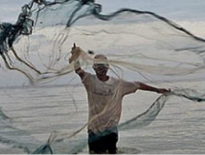
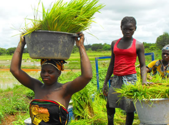

WÛTHRANTS
Lavrador
As propostas e ações para retornarmos aos trilhos de nossa dinâmica dentro dos nossos pressupostos civilizacionais ancestrais.
Ler maisPescadoras
As propostas e ações para retornarmos aos trilhos de nossa dinâmica dentro dos nossos pressupostos civilizacionais ancestrais.
Ler maisBaquiadur

As propostas e ações para retornarmos aos trilhos de nossa dinâmica dentro dos nossos pressupostos civilizacionais ancestrais.
Ler maisPano de Pinti

As propostas e ações para retornarmos aos trilhos de nossa dinâmica dentro dos nossos pressupostos civilizacionais ancestrais.
Ler maisVinho Palmo
Furar vinho palmo, é uma das bebidas muito consomida por etnia Bopepile, assim como etnia Mandjaca e Mancanhe, Bijogo, Fulepe. É uma das bebidas alcolicas usadas nas ceremonias tradicional destes povos referidos acima.
Ler maisPesca Masculina
Esta pesca, é uma das pescas pouco recorrido nos últimos anos na região de Bopepiel. Conhecida como umas das maiores pescas individual na região
Ler maisArroz de Bolanha
Cultivo do arroz é uma forma mais usada do grupo étnico Bopepiel. Beneficiados destes cultivos devido a zona onde habitat na República da Guiné-Bissau.
Ler maisHorta de Tomate

As mulheres Bopepiel cultivam toneladas de tomates para colocarem a venda e assim ganhar dinheiro para adquerir outros bens
Ler mais